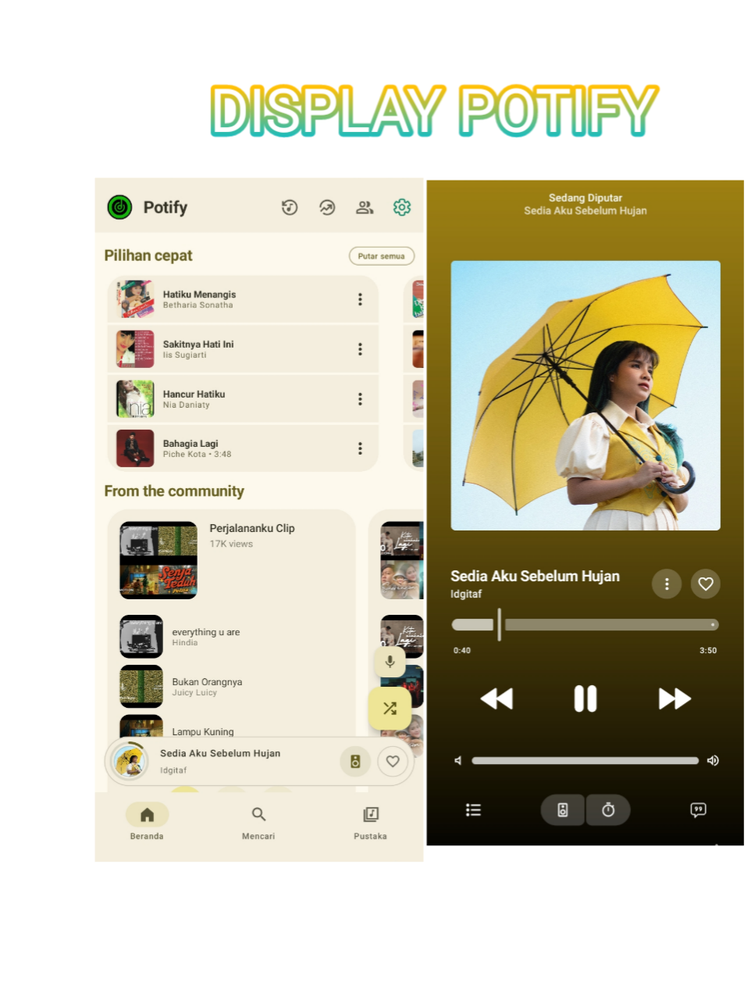

POTIFY
DOWNLOAD POTIFY v1.0.2Nonton
Potify Music - Streaming Music Online Gratis Lengkap
1. Anti Iklan 100% Free
2. Anti Berlangganan
3. Feature Lengkap
4. Lirik & Kualitas Minimalis
© Release 2025 - Developer By HanxxyModz
🎵 Streaming Tingkat Lanjut:
Integrasi Katalog Lengkap: Streaming lagu apa pun dari YouTube dan YT Music, sepenuhnya tanpa iklan. Kanvas Animasi: Latar belakang animasi bergaya Apple Music yang menakjubkan yang menghidupkan musik. Pemutaran Latar Belakang: Pemutaran berkelanjutan berkualitas tinggi dengan kontrol laci notifikasi lengkap.
📋 Sinkronisasi Karaoke:
Lirik yang indah dan tepat, kata demi kata disorot. EQ Terintegrasi: Kustomisasi audio fidelitas tinggi dengan Equalizer dalam aplikasi.
📥 Pengalaman Offline:
Unduhan Lokal: Unduh dan simpan lagu ke perangkat Anda untuk dinikmati secara offline. Penyimpanan Cerdas: Manajemen cache cerdas yang mengoptimalkan ruang secara otomatis.
🎨 UI & Desain Ekspresif:
Material Dinamis: Warna adaptif yang indah yang berubah sesuai dengan sampul album yang sedang Anda putar. Animasi Premium: Animasi mikro yang sangat halus dan transisi layar yang mulus. Arsitektur Modern: Tata letak ramping dan modern yang dirancang dengan pedoman Material 3 terbaru dari Android.
VERSI APLIKASI
1.0.2 News
ARCHITECTURE
ARM-64 + ARMEBIA-V7A + X86 + X86-64
DEVELOPERS
Aplikasi ini dibuat Dan Diriliskan Oleh HanxxyModz 😇
